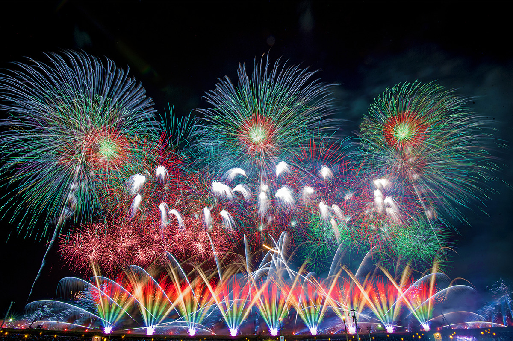
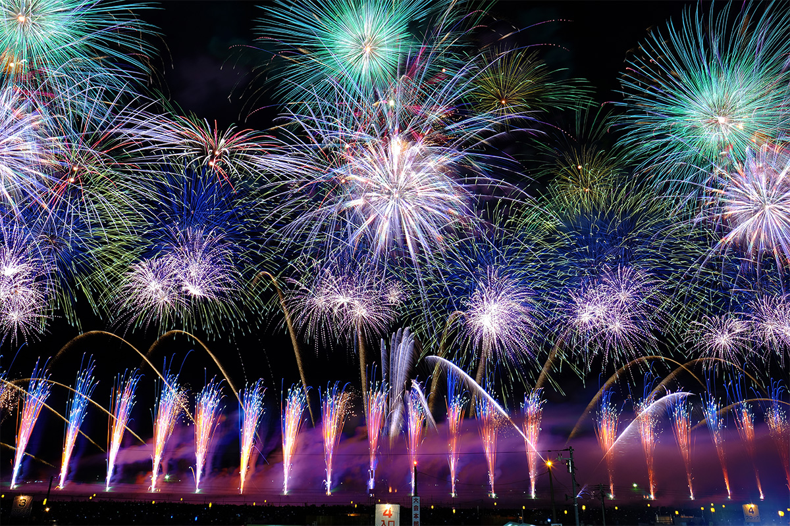
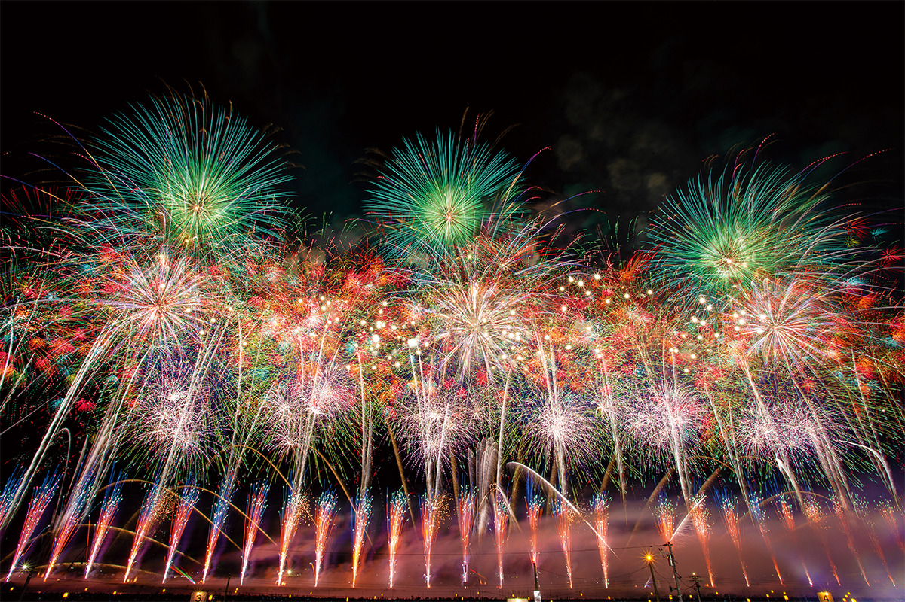
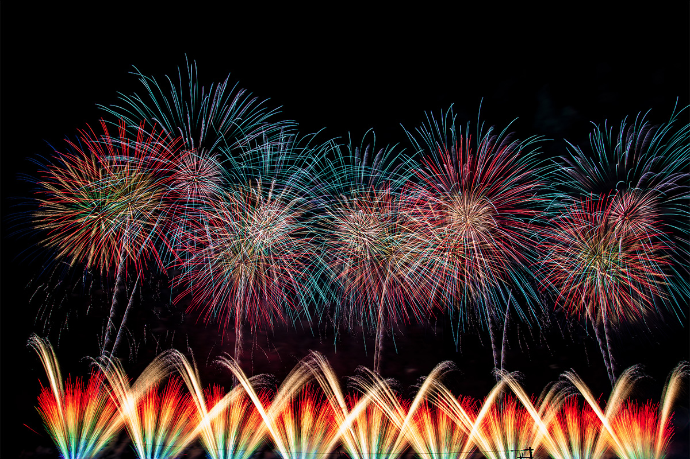
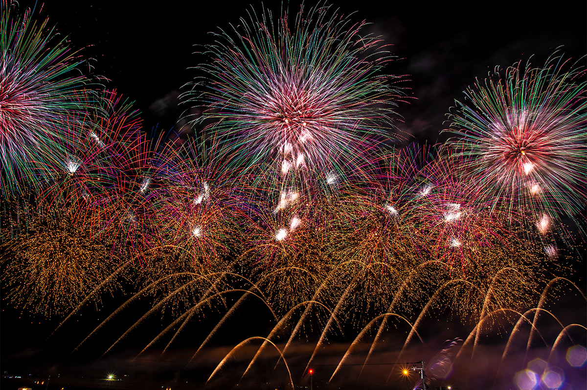
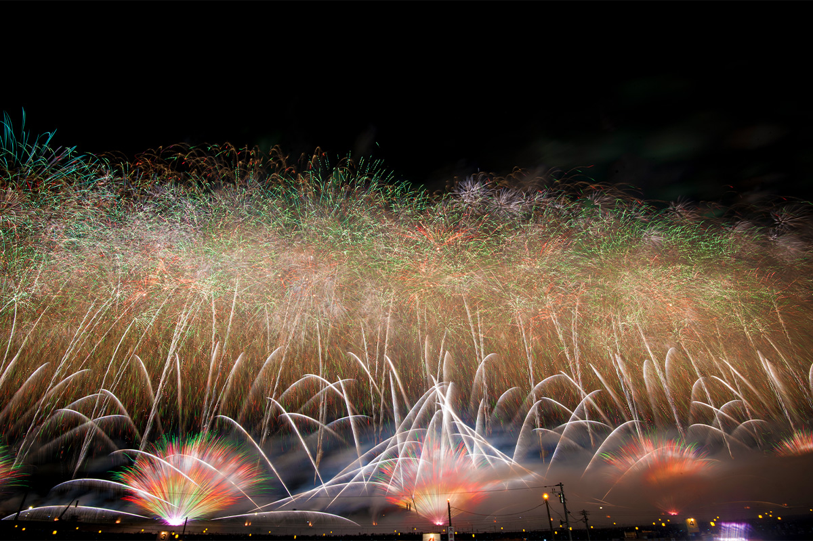
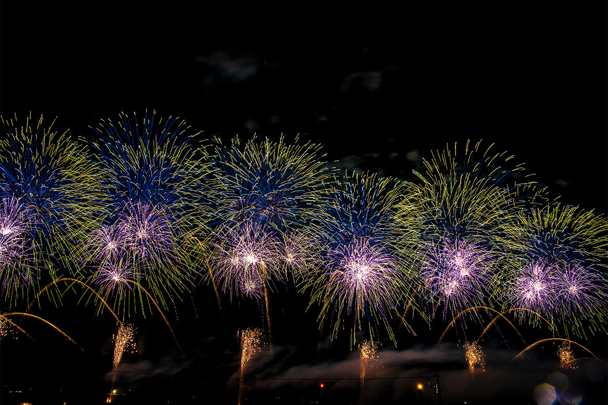
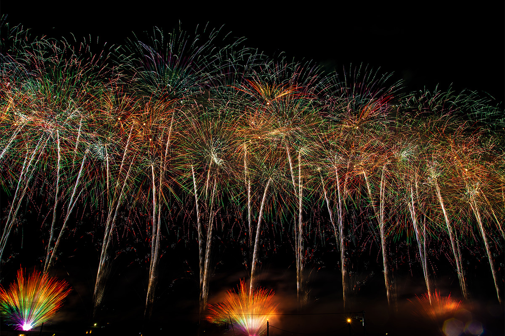
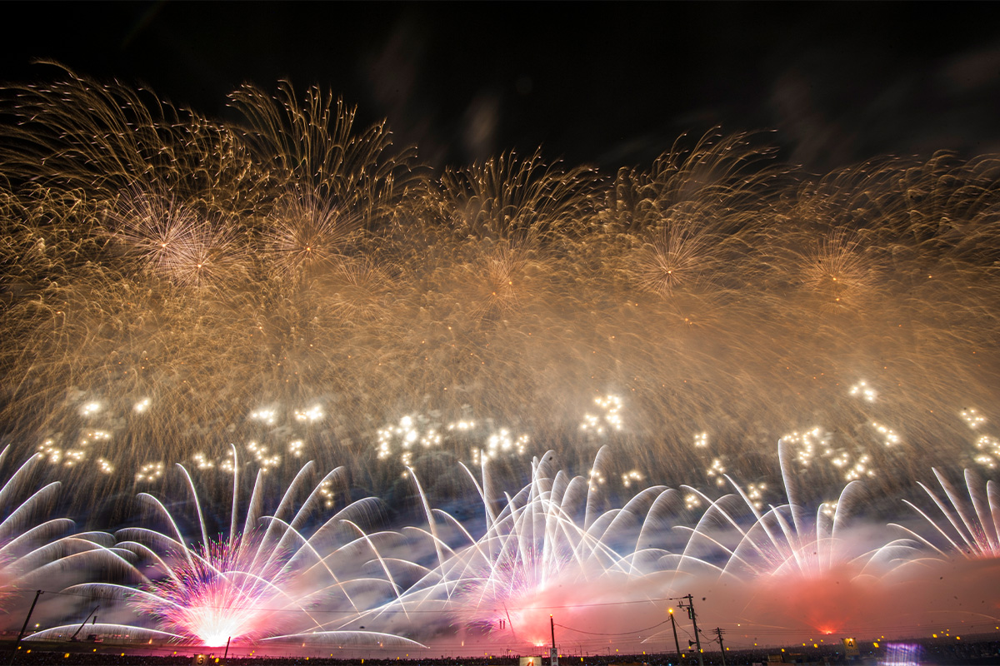

Префектура Акита · Дайсэн · праздник
Фейерверк в Омагари: олимпиада японских мастеров фейерверка

Фейерверк в Омагари входит в тройку самых знаменитых фейерверков Японии, и многие считают, что именно здесь можно увидеть самые искусные залпы в мире. Для мастеров со всей страны это не просто праздник, а главный экзамен года.
Праздник
Зачем ехать на японский мацури
Праздники мацури с давних времён вплетены в жизнь японцев и рассказывают о природе и культуре своей местности. На многие из них путешественник может прийти не зрителем, а участником и разделить с местными жителями тот же опыт. Заодно лучше понимаешь японскую историю и культуру, а поездка ради праздника дарит впечатления, которых не получить в обычном туре.
Омагари находится в городе Дайсэн на юго-востоке префектуры Акита. Каждое лето на берегу реки Омоно здесь проходит фейерверк, о котором японские мастера пиротехники говорят с особым уважением.
Конкурс
Вершина для мастеров со всей Японии
Мало какое зрелище собирает столько людей сразу, сколько фейерверк. Можно приехать к месту запуска, пройтись между торговыми палатками и почувствовать грохот залпов всем телом. А можно смотреть из окна или из сада, когда далёкие вспышки и раскаты доносятся до дома. Восхищённые лица и крики зрителей подгоняют мастеров по всей стране: каждый год они оттачивают технику и придумывают новые заряды, чтобы зажечь в небе цветок, которого ещё никто не видел.

Среди множества японских фейерверков Омагари для мастеров стоит особняком. «Фейерверк в Омагари» это народное название, а официально праздник называется Всеяпонским конкурсом фейерверков. Как и следует из названия, это не развлечение, а смотр мастерства, где пиротехники показывают плоды целого года работы. Конкурс настолько авторитетен, что попасть в число участников уже считается целью.
История
Олимпиада, на которую трудно попасть
Истории конкурса больше ста лет. Он вырос из выставки фейерверков шести префектур региона Оу, которую в 1910 году устроили вместе с праздником святилища Сува. Число участников ограничено: на 2022 год их было 28 пиротехнических компаний. Раз в пять лет две-три компании с худшими результатами уступают место другим.

Те, кто уже вошёл в число участников, должны браться за всё более сложные заряды, чтобы выступить лучше, чем в прошлом году. А компании, которые пока ждут своей очереди, на каждом выступлении показывают лучшее, надеясь пробиться при следующей ротации. Так Омагари держит в тонусе мастеров всей страны и служит для них чем-то вроде олимпиады.
Правила
Мастер сам запускает свой фейерверк
Фейерверки в Омагари проходят не только летом, но и весной, осенью и зимой. Однако по размаху и уровню летний Всеяпонский конкурс не знает равных. Мастера соревнуются в четырёх дисциплинах, и оценивают их по сумме: дневной фейерверк, крупные шары калибра 10 го с «сердцевиной», шары того же калибра в свободной форме и «творческий фейерверк». В дневном фейерверке, который запускают ещё засветло, красота складывается из цвета и формы дыма и из вспышек.

Даже самый смелый новый заряд должен быть безопасным. Если шар раскрывается слишком низко или его звёзды не догорают и падают на землю ещё горящими, баллы снимают. Поэтому высокое мастерство нужно не только при изготовлении, но и при запуске. По правилам мастер, который сделал заряд, сам его и запускает, и это ещё одна причина, почему Омагари для мастеров становится настоящей проверкой сил.
Программа
Около 18 000 зарядов за четыре часа
По данным 2022 года, дневной фейерверк как конкурсную дисциплину во всей Японии проводит только Омагари, и увидеть дневные залпы разных компаний в одном месте больше почти негде. Поэтому если на другие фейерверки люди собираются к вечеру, то здесь зрители приходят ещё днём. Вместе с дневной частью, до последнего ночного выступления, праздник длится около четырёх часов.

Между выступлениями конкурсантов запускают специальные программы и фейерверки от организаторов. Одни залпы идут под музыку, другие, так называемые широкие «стармайны», занимают почти весь просторный речной берег. Это зрелище совсем другого рода, чем сам конкурс, и оно тоже собирает множество поклонников. Днём и ночью вместе планируют запустить около 18 000 зарядов, и всё это время небо над Омагари превращается в огромное полотно.
Конкурс проходит в последнюю субботу августа. В 2026 году он прошёл 29 августа.




Всеяпонский конкурс фейерверков «Фейерверк в Омагари»
- Адрес
- префектура Акита, Дайсэн, Омагари, берег реки Омоно (парк «Омагари-но ханаби»)
- Телефон
- +81 187-88-8073 (Торгово-промышленная палата Омагари)
- Даты
- ежегодно в последнюю субботу августа (в 2026 году 29 августа)
- Как добраться
- от станции JR Омагари пешком около 30 минут; на машине около 10 минут от развязки Омагари скоростной дороги Акита. В день праздника в городе перекрывают движение
Фото: Город Дайсэн.